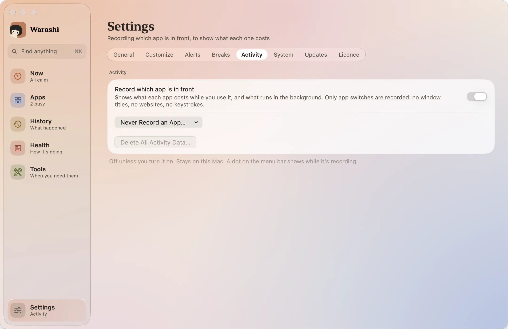
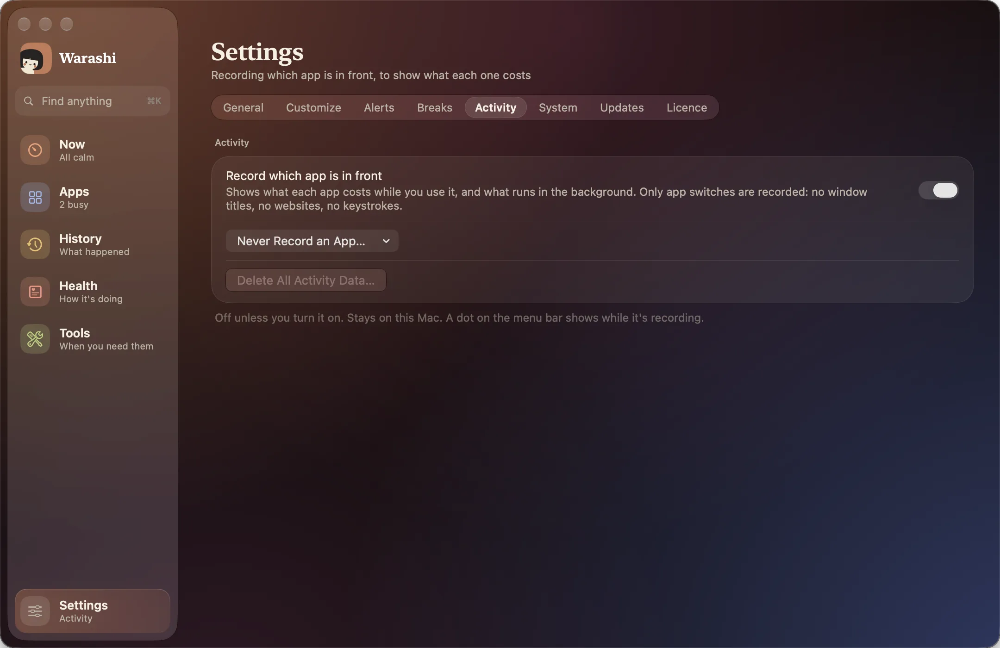
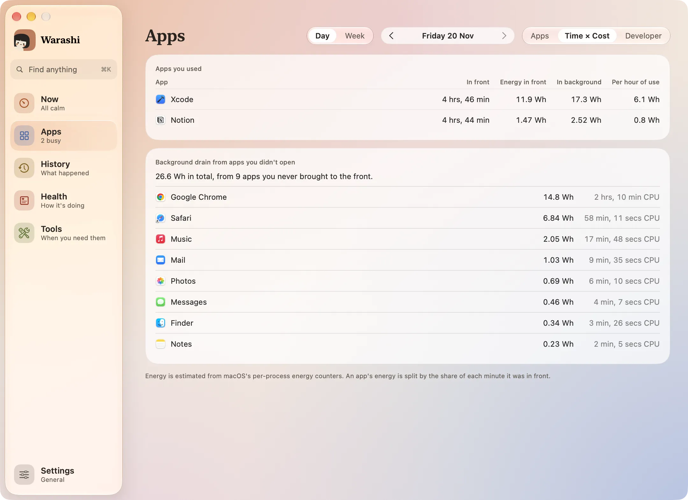

Tempo × Costo è una scheda di App. Unisce due cose: per quanto tempo ogni app è stata in primo piano e quanto è costata in energia. Risponde a “quanto mi costa questa app per ora?” e “cosa ha scaricato la batteria mentre non la usavo nemmeno?”.
Attivalo
- Apri Impostazioni › Attività
Premi ⌘, e scegli Attività.


- Attiva Registra quale app è in primo piano
Ora Warashi annota solo quale app è in primo piano. Niente titoli di finestre, siti web o tasti premuti, e non chiede mai Registrazione schermo o Accessibilità. Un puntino accanto allo spiritello compare mentre registra.
- Escludi le app se vuoi
Non registrare mai un'app… esclude del tutto le app scelte. Elimina tutti i dati di attività… cancella tutto ciò che è stato registrato finora.
Leggilo
- Apri Tempo × Costo
Scegli App, poi la scheda Tempo × Costo. Scorri i giorni con le frecce in alto. Passa a Settimana per il riepilogo settimanale.


- App che hai usato
Per ogni app: tempo in primo piano, energia in primo piano, energia in background ed energia per ora di utilizzo.
- Consumo in background
App che hanno consumato energia senza mai passare in primo piano: spesso le più sorprendenti.